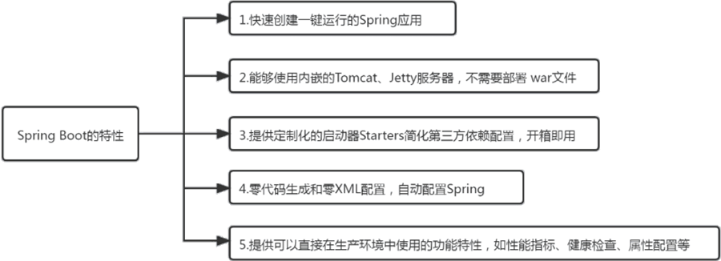
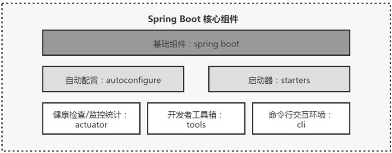
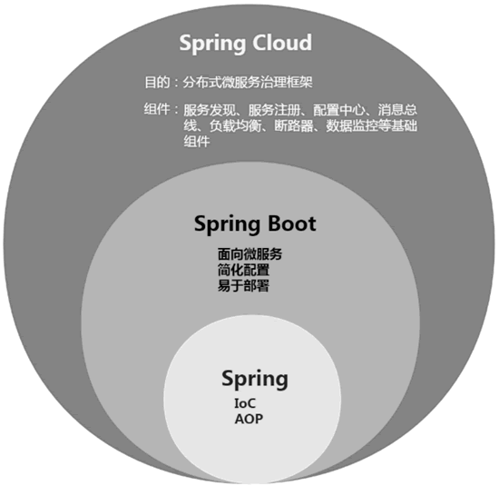

首页 > 编程笔记
Spring Boot是什么（非常详细）
Spring Boot 是由 Pivotal 团队提供的基于 Spring 的全新框架，旨在简化 Spring 应用的初始搭建和开发过程。该框架使用了特定的方式来进行配置，从而使开发人员不再需要定义样板化的配置。
Spring 官网给的定义是：Spring Boot 是所有基于 Spring 开发项目的起点。Spring Boot 集成了绝大部分目前流行的开发框架，就像 Maven 集成了所有的 JAR 包一样，Spring Boot 集成了几乎所有的框架，使得开发者能快速搭建 Spring 项目。
Spring Boot 的核心设计思想是“约定优于配置”。基于这一设计原则，Spring Boot 极大地简化了项目和框架的配置。比如在使用 Spring 开发 Web 项目时，我们需要配置 web.xml、Spring 和 MyBatis 等，还需要将它们集成在一起。而使用 Spring Boot 一切将变得极其简单，它采用了大量的默认配置来简化这些文件的配置过程，只需引入对应的 Starters（启动器）。
Spring Boot 可以构建一切。设计它就是为了使用最少的配置，以最快的速度来启动和运行 Spring 项目。
通过访问 Spring 官网就可以看到 Spring 的所有子项目和组件框架，如此多的子项目和组件使得 Spring 逐渐笨重起来，这显然已经无法适应云计算和微服务时代的发展趋势。
于是 Spring Boot 应运而生。Spring Boot 建立在 Spring 基础之上，遵循“约定优于配置”的原则，避免了创建项目或框架时必须做的繁杂配置，帮助开发者以最少的工作量，更加简单、方便地使用现有 Spring 中的所有功能组件。
下图所示为 Spring Boot 的一些特性：
另外，由于 Spring Boot 的流行，很多第三方中间件也按照 Spring Boot 的规范提供了针对 Spring Boot 项目的 Starters（启动器），一般以组件名开头，比如 MyBatis 针对 Spring Boot 提供的组件包 mybatis-spring-boot-starter。
Spring Boot 的核心组件如下图所示：
总结起来Spring Boot有如下几个优点：
从软件发展的角度来讲，越简单的开发模式越流行，越有活力，其可以让开发者将精力集中在业务逻辑本身，提高软件开发效率。Spring Boot 就是尽可能地简化应用开发的门槛，让应用开发、测试、部署变得更加简单。
Spring Boot 作为微服务框架的基础被越来越多地应用于企业级开发中，它是 Spring Cloud 的基础。要学习 Spring Cloud，就必须了解 Spring Boot 框架的架构和设计理念。
Spring Boot 是 Spring 生态下的一个子项目，用于快速、敏捷地开发新一代基于 Spring 框架的应用程序。同时，它将目前各种比较成熟的服务框架和第三方组件组合起来（如 Redis、MongoDB、JPA、RabbitMQ、Quartz 等），按照“约定优于配置”的设计思想封装成 Starters 组件。这样，我们在 Spring Boot 应用中几乎可以零配置地使用这些组件，达到开箱即用的效果，从而从繁杂的配置中解放出来，更加专注于业务逻辑的开发。
Spring Boot 的优点可以概括为以下几个方面：
总的来说，Spring Boot 让构建、编码、配置、部署、监控都变得非常简单。Spring Boot 可以说是近年来 Spring 社区乃至整个 Java 社区非常有影响力的项目之一。
初次学习 Spring Boot 的读者，千万不要把它想得太复杂。Spring Boot 不是新的语言、新的技术，它只是把现有的比较流行的框架集成在一起，遵循“约定优于配置”的原则，开箱即用，使得我们不需要再去关注那些烦琐的配置。有了这个概念之后，就可以带着轻松的心情去学习 Spring Boot。
“约定优于配置”也被称作“按约定编程”，是一种软件设计范式，旨在减少软件开发者需要的配置项，这样既能使软件保持简单而又不失灵活性。
从本质上来说，系统、类库或框架应该约定合理的默认值，开发者仅需规定应用中不符合约定的部分。例如，如果模型中有一个名为 Product 的类，那么数据库中对应的表就会默认命名为 product，只有在偏离这个约定时才需要定义有关这个名字的配置，例如将该表命名为 product_info。
简单来说“约定优于配置”就是遵循约定。如果你所用工具的约定配置符合你的要求，那么就可以省去此配置；不符合，就通过修改相关的配置来达到你所期待的方式。
“约定优于配置”不是新的概念，许多框架使用了“约定优于配置”的设计范式，包括 Maven、Spring、Grails、Grok、Apache Wicket 等。
Spring Boot 是 Spring 对“约定优于配置”的最佳实践产物。小到配置文件、中间件的默认配置，大到内置容器、Spring 生态中的各种 Starters，无不遵循“约定优于配置”的设计思想。正是因为简化的配置和众多的 Starters，才让 Spring Boot 变得简单、易用、容易上手，也正是“约定优于配置”的设计思想的彻底落地，才让 Spring Boot 走向辉煌。
Spring 是一个开源生态体系，是集大成者。其核心是控制反转（Inversion of Control，IoC）和面向切面编程（Aspect Oriented Programming，AOP）。正是 IoC 和 AOP 这两个核心功能成就了强大的 Spring，Spring 在这两大核心功能上不断地发展壮大，才有了 Spring MVC 等一系列成熟的产品，最终构建了功能强大的 Spring 生态帝国。
Spring Boot 是在 Spring 的基础上发展而来的，它不是为了取代 Spring，而是为了简化 Spring 应用的创建、运行、调试、部署，让开发者更容易地使用 Spring。它将目前各种比较成熟的服务框架和第三方组件组合起来，按照“约定优于配置”的设计思想进行重新封装，屏蔽掉复杂的配置和实现，最终给开发者提供一套简单、易用、易部署、易维护的分布式系统开发工具包。
Spring Cloud 是基于 Spring Boot 实现的分布式微服务框架，它利用 Spring Boot 简单、易用、便利的特性简化了分布式系统基础设施的开发，如服务发现、服务注册、配置中心、消息总线、负载均衡、断路器、数据监控等基础组件都可以用 Spring Boot 的开发风格做到一键启动和部署。
我们都知道，采用微服务架构，服务的数量会非常多，管理特别麻烦，而 Spring Cloud 就是一套分布式微服务治理框架，可以说是这些微服务的大管家。作为大管家 Spring Cloud 就需要提供各种组件和方案来治理与维护整个微服务系统，比如服务之间的通信、熔断、监控等。Spring Cloud 利用 Spring Boot 的特性集成了开源行业中优秀的组件，在微服务架构中对外提供了一套服务治理的解决方案。
Spring Boot 在 Spring Cloud 中起到了承上启下的作用，如果要学习 Spring Cloud，则必须学习 Spring Boot。三者之间的关系如下图所示。
我们可以这样理解：正是由于 IoC 和 AOP 这两个强大的功能才有了强大的 Spring；Spring 生态不断地发展才有了 Spring Boot；Spring Boot 开发、部署的简化，使得 Spring Cloud 微服务治理方案彻底落地。
Spring 官网给的定义是：Spring Boot 是所有基于 Spring 开发项目的起点。Spring Boot 集成了绝大部分目前流行的开发框架，就像 Maven 集成了所有的 JAR 包一样，Spring Boot 集成了几乎所有的框架，使得开发者能快速搭建 Spring 项目。
Spring Boot 的核心设计思想是“约定优于配置”。基于这一设计原则，Spring Boot 极大地简化了项目和框架的配置。比如在使用 Spring 开发 Web 项目时，我们需要配置 web.xml、Spring 和 MyBatis 等，还需要将它们集成在一起。而使用 Spring Boot 一切将变得极其简单，它采用了大量的默认配置来简化这些文件的配置过程，只需引入对应的 Starters（启动器）。
Spring Boot 可以构建一切。设计它就是为了使用最少的配置，以最快的速度来启动和运行 Spring 项目。
Spring Boot的背景
多年来，随着 Spring 的飞速发展，新功能不断增加，Spring 变得越来越复杂。通过访问 Spring 官网就可以看到 Spring 的所有子项目和组件框架，如此多的子项目和组件使得 Spring 逐渐笨重起来，这显然已经无法适应云计算和微服务时代的发展趋势。
于是 Spring Boot 应运而生。Spring Boot 建立在 Spring 基础之上，遵循“约定优于配置”的原则，避免了创建项目或框架时必须做的繁杂配置，帮助开发者以最少的工作量，更加简单、方便地使用现有 Spring 中的所有功能组件。
Spring Boot的特性
Spring Boot 的一系列特性使得微服务架构的落地变得非常容易，对于目前众多的技术栈，Spring Boot 是 Java 领域微服务架构的最优落地技术。下图所示为 Spring Boot 的一些特性：

图 1 Sprint Boot 的特性
图 1 Sprint Boot 的特性
Spring Boot的核心组件
Spring Boot 官方提供了很多当前流行的基础功能组件的封装，命名一般以 spring-boot-starter 开头，比如 spring-boot-starter-quartz 定时任务组件和 spring-boot-starter-thymeleaf 页面模板引擎等。另外，由于 Spring Boot 的流行，很多第三方中间件也按照 Spring Boot 的规范提供了针对 Spring Boot 项目的 Starters（启动器），一般以组件名开头，比如 MyBatis 针对 Spring Boot 提供的组件包 mybatis-spring-boot-starter。
Spring Boot 的核心组件如下图所示：

图 2 Spring Boot的核心组件
图 2 Spring Boot的核心组件
Spring Boot的优点
Spring Boot 继承了 Spring 一贯的优点和特性，同时增加了一些新功能和新特性，这让 Spring Boot 非常容易上手，也让编程变得更加简单。总结起来Spring Boot有如下几个优点：
- 遵循“约定优于配置”的原则，使用 Spring Boot 只需要很少的配置或使用默认的配置。
- 使用 JavaConfig，避免使用 XML 的烦琐。
- 提供 Starters（启动器），简化 Maven 配置，避免依赖冲突。
- 提供内嵌 Servlet 容器，可选择内嵌 Tomcat、Jetty 等容器，不需要单独的 Web 服务器。这意味着不再需要启动 Tomcat 或其他任何中间件。
- 提供了一系列项目中常见的非功能特性，如安全监控、应用监控、健康检测等。
- 与云计算、微服务的天然集成。
从软件发展的角度来讲，越简单的开发模式越流行，越有活力，其可以让开发者将精力集中在业务逻辑本身，提高软件开发效率。Spring Boot 就是尽可能地简化应用开发的门槛，让应用开发、测试、部署变得更加简单。
为什么学习Spring Boot
最近几年，Spring 生态圈最流行的技术框架莫过于 Spring Boot 和 Spring Cloud。目前，各个企业都在推动微服务技术架构的落地，将一个复杂的应用拆分成多个小的独立模块，分开部署，互不干扰，从而达到松散耦合、提高开发效率和降低运维成本的目的。Spring Boot 作为微服务框架的基础被越来越多地应用于企业级开发中，它是 Spring Cloud 的基础。要学习 Spring Cloud，就必须了解 Spring Boot 框架的架构和设计理念。
Spring Boot 是 Spring 生态下的一个子项目，用于快速、敏捷地开发新一代基于 Spring 框架的应用程序。同时，它将目前各种比较成熟的服务框架和第三方组件组合起来（如 Redis、MongoDB、JPA、RabbitMQ、Quartz 等），按照“约定优于配置”的设计思想封装成 Starters 组件。这样，我们在 Spring Boot 应用中几乎可以零配置地使用这些组件，达到开箱即用的效果，从而从繁杂的配置中解放出来，更加专注于业务逻辑的开发。
Spring Boot 的优点可以概括为以下几个方面：
- 快速构建：使用 Spring Initializr 可以快速创建项目，同时提供了丰富的解决方案，便于快速集成各种解决方案，提升开发效率。
- 简化依赖：提供丰富的 Starters，简化 Maven 配置，避免版本兼容问题。
- 一键部署：内嵌 Servlet 容器，如 Tomcat、Jetty，能够直接打包成可执行 JAR 文件独立运行，支持 Jenkins、Docker，轻松实现自动化运维。
- 应用监控：自带 Actuator 监控组件，轻松监控服务的各项状态。使用 Spring Boot Admin 可以轻松部署功能完善的应用监控系统。
总的来说，Spring Boot 让构建、编码、配置、部署、监控都变得非常简单。Spring Boot 可以说是近年来 Spring 社区乃至整个 Java 社区非常有影响力的项目之一。
初次学习 Spring Boot 的读者，千万不要把它想得太复杂。Spring Boot 不是新的语言、新的技术，它只是把现有的比较流行的框架集成在一起，遵循“约定优于配置”的原则，开箱即用，使得我们不需要再去关注那些烦琐的配置。有了这个概念之后，就可以带着轻松的心情去学习 Spring Boot。
什么是“约定优于配置”
我们知道 Spring Boot 的核心设计思想是“约定优于配置”，Spring Boot 提供的所有 Starters 都是遵循这一思想实现的。那么，究竟什么是“约定优于配置”呢？“约定优于配置”也被称作“按约定编程”，是一种软件设计范式，旨在减少软件开发者需要的配置项，这样既能使软件保持简单而又不失灵活性。
从本质上来说，系统、类库或框架应该约定合理的默认值，开发者仅需规定应用中不符合约定的部分。例如，如果模型中有一个名为 Product 的类，那么数据库中对应的表就会默认命名为 product，只有在偏离这个约定时才需要定义有关这个名字的配置，例如将该表命名为 product_info。
简单来说“约定优于配置”就是遵循约定。如果你所用工具的约定配置符合你的要求，那么就可以省去此配置；不符合，就通过修改相关的配置来达到你所期待的方式。
“约定优于配置”不是新的概念，许多框架使用了“约定优于配置”的设计范式，包括 Maven、Spring、Grails、Grok、Apache Wicket 等。
Spring Boot 是 Spring 对“约定优于配置”的最佳实践产物。小到配置文件、中间件的默认配置，大到内置容器、Spring 生态中的各种 Starters，无不遵循“约定优于配置”的设计思想。正是因为简化的配置和众多的 Starters，才让 Spring Boot 变得简单、易用、容易上手，也正是“约定优于配置”的设计思想的彻底落地，才让 Spring Boot 走向辉煌。
Spring、Spring Boot和Spring Cloud的关系
随着 Spring、Spring Boot 和 Spring Cloud 的不断发展，越来越多的开发者加入 Spring 的大军中。对于初学者而言，可能不太了解 Spring、Spring Boot 和 Spring Cloud 这些概念以及它们之间的关系，下面我们一起来捋一捋。Spring 是一个开源生态体系，是集大成者。其核心是控制反转（Inversion of Control，IoC）和面向切面编程（Aspect Oriented Programming，AOP）。正是 IoC 和 AOP 这两个核心功能成就了强大的 Spring，Spring 在这两大核心功能上不断地发展壮大，才有了 Spring MVC 等一系列成熟的产品，最终构建了功能强大的 Spring 生态帝国。
Spring Boot 是在 Spring 的基础上发展而来的，它不是为了取代 Spring，而是为了简化 Spring 应用的创建、运行、调试、部署，让开发者更容易地使用 Spring。它将目前各种比较成熟的服务框架和第三方组件组合起来，按照“约定优于配置”的设计思想进行重新封装，屏蔽掉复杂的配置和实现，最终给开发者提供一套简单、易用、易部署、易维护的分布式系统开发工具包。
Spring Cloud 是基于 Spring Boot 实现的分布式微服务框架，它利用 Spring Boot 简单、易用、便利的特性简化了分布式系统基础设施的开发，如服务发现、服务注册、配置中心、消息总线、负载均衡、断路器、数据监控等基础组件都可以用 Spring Boot 的开发风格做到一键启动和部署。
我们都知道，采用微服务架构，服务的数量会非常多，管理特别麻烦，而 Spring Cloud 就是一套分布式微服务治理框架，可以说是这些微服务的大管家。作为大管家 Spring Cloud 就需要提供各种组件和方案来治理与维护整个微服务系统，比如服务之间的通信、熔断、监控等。Spring Cloud 利用 Spring Boot 的特性集成了开源行业中优秀的组件，在微服务架构中对外提供了一套服务治理的解决方案。
Spring Boot 在 Spring Cloud 中起到了承上启下的作用，如果要学习 Spring Cloud，则必须学习 Spring Boot。三者之间的关系如下图所示。

图 3 Spring、Spring Boot和Spring Cloud的关系
图 3 Spring、Spring Boot和Spring Cloud的关系
我们可以这样理解：正是由于 IoC 和 AOP 这两个强大的功能才有了强大的 Spring；Spring 生态不断地发展才有了 Spring Boot；Spring Boot 开发、部署的简化，使得 Spring Cloud 微服务治理方案彻底落地。
关注公众号「站长严长生」，在手机上阅读所有教程，随时随地都能学习。内含一款搜索神器，免费下载全网书籍和视频。

微信扫码关注公众号